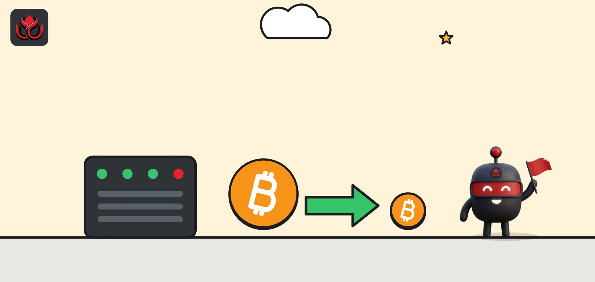
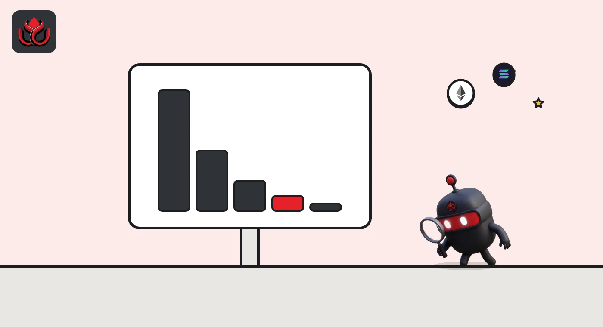
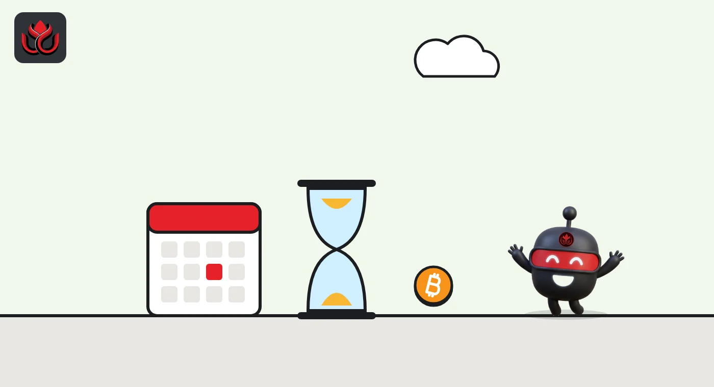

Bitcoin halving explained: what it is, when the next one is and why it matters
The bitcoin halving is a rule in bitcoin's code that cuts the reward for mining a new block in half every 210,000 blocks, about every four years. The last one happened on April 20, 2024, at block 840,000. The next is due at block 1,050,000, expected around spring 2028.

Key points
- Every 210,000 blocks, the number of new bitcoin paid to miners per block is cut in half. This is written into bitcoin's consensus code.
- The fourth halving happened at block 840,000 on April 20, 2024, cutting the block subsidy from 6.25 to 3.125 BTC.
- The fifth halving is due at block 1,050,000. With the chain at block 974,255 on November 2, 2026, that is about 75,700 blocks, or roughly 17 months, away.
- The halvings are why bitcoin's supply is capped just under 21 million coins.
What is the bitcoin halving?
New bitcoin enter circulation as a reward to miners, the computers that bundle transactions into blocks and secure the network. Each new block pays its miner a fixed number of new coins, called the block subsidy, plus the fees paid by the transactions inside it.
The halving is the moment that subsidy is cut in half. It is not a decision by any company or committee. It is a few lines of code in Bitcoin Core's validation code, the main software that runs the network. The subsidy started at 50 bitcoin per block, and the code's own comment says it is cut in half every 210,000 blocks, which occurs approximately every four years.
How does the halving work in the code?
The rule is simple enough to read. The function that sets the reward divides the current block height (the block's number in the chain) by 210,000 to count how many halvings have happened. It then halves 50 bitcoin that many times. The interval of 210,000 is set in the network's chain parameters.
So blocks 0 to 209,999 paid 50 BTC, blocks 210,000 to 419,999 paid 25 BTC, and so on. After 64 halvings the code forces the subsidy to zero. Long before that, the reward becomes smaller than the smallest unit of bitcoin and effectively disappears, leaving miners paid only by transaction fees.
The timing works out to about four years because the network targets one block every 10 minutes. At 10 minutes each, 210,000 blocks take about 1,458 days. To hold that pace, the code readjusts mining difficulty every two weeks' worth of blocks.
Bitcoin block subsidy by halving era
BTC per block
Source: Bitcoin Core validation.cpp and chainparams.cpp; date from Blockchain.com block explorer

When was the last bitcoin halving?
The fourth halving took effect at block 840,000, mined at 8:09 p.m. ET on April 19, 2024, according to the Blockchain.com explorer. In UTC it was already April 20, the date usually given for the halving. The block was mined by the ViaBTC pool.
From that block on, the subsidy dropped from 6.25 to 3.125 BTC. Block 840,000 itself paid its miner 40.75 BTC in total, because users paid about 37.63 BTC in transaction fees to get into the first block of the new era, many times the subsidy.
How much new bitcoin is created each day?
At the target pace of one block every 10 minutes, the network produces about 144 blocks a day. With a subsidy of 3.125 BTC per block, that is about 450 new bitcoin a day in the current era. After the next halving it will be about 225 a day.
At bitcoin's price of about $77,658 at 8 a.m. ET on CoinMarketCap as of November 2, 2026, 450 bitcoin is worth about $35 million. That is roughly what miners as a group earn each day from the subsidy, before transaction fees.
The schedule also explains where the 21 million figure comes from. Each era lasts 210,000 blocks, so the subsidy in Bitcoin Core's code adds up as follows:
- Era 1 (50 BTC): 10,500,000 BTC.
- Era 2 (25 BTC): 5,250,000 BTC.
- Era 3 (12.5 BTC): 2,625,000 BTC.
- Era 4 (6.25 BTC): 1,312,500 BTC.
- Era 5, the current one (3.125 BTC): 656,250 BTC.
By the end of the current era at block 1,050,000, the schedule will have issued 20,343,750 bitcoin. Every later era adds half as much as the one before, so the total creeps toward 21 million without ever reaching it. Some coins issued over the years can also never be spent, for example if their keys were lost, so the usable supply is lower than the issued figure.

When is the next bitcoin halving?
The fifth halving will happen at block 1,050,000, when the subsidy falls to 1.5625 BTC. The Blockchain.com explorer showed block 974,255 mined at 7:33 a.m. ET on November 2, 2026, which leaves 75,745 blocks to go.
At the target pace of one block every 10 minutes, that is about 526 days, which points to around April 2028. Treat that as an estimate. When more mining power joins the network, blocks come a little faster until difficulty catches up, which can pull the date earlier. The exact date is only known once the block is mined.
Hashrate has been climbing; LC Insight covered bitcoin's hashrate returning above 1 zettahash in October.
Why does the halving matter?
Supply. Because each era pays half the previous one, total issuance approaches but never quite reaches 21 million bitcoin. CoinMarketCap listed 20,105,365 BTC in circulation, out of a maximum of 21,000,000, as of November 2, 2026. That means roughly 95.7% of all bitcoin that will ever exist has already been created.
Miners. A halving cuts miners' subsidy income in half overnight. Miners with high power costs or old machines can become unprofitable unless the bitcoin price or fees rise to make up the gap. Over time, fees must carry more of the network's security budget.
Price. Many investors watch halvings because new supply slows. But the halving date is known years ahead, and price depends on demand as well as supply. Past patterns are not a reliable guide to what happens next.
Fees. Block 840,000 showed how fees can matter. Its 37.63 BTC in fees was about 12 times its 3.125 BTC subsidy. That was an unusual block, the first of a new era, but it shows the kind of revenue fees can add when demand for block space spikes.
Can the halving be changed?
In theory, the rule could be changed only if the people running bitcoin nodes adopted new software that changes it, which would split the network from anyone who did not. The current Bitcoin Core code still carries the same 50 BTC starting point and 210,000 block interval. For more on how Bitcoin Core releases work, see our report on Bitcoin Core 32.1.
LC Insight analysis
This section is our reading of the facts above, not a statement of fact.
- We think the bigger long-term question is not the price effect but miner income. Each halving makes the network's security more dependent on fees, and fee demand has been uneven.
- Countdown dates for the next halving are estimates. Any date more precise than a few weeks should be treated with caution until the final few thousand blocks.
What's next
- Block height and the estimated date of block 1,050,000
- Share of miner revenue coming from fees
- Hashrate and difficulty changes as the 2028 halving approaches
Frequently asked questions
How many bitcoin halvings have there been?
Four: at blocks 210,000, 420,000, 630,000 and 840,000. The last was on April 20, 2024, in UTC, which was the evening of April 19 in ET.
What is the block reward now?
The subsidy is 3.125 BTC per block until block 1,050,000, plus whatever transaction fees the block collects.
Will the halving happen on a set date?
No. It happens at a set block height, 1,050,000 for the next one. The date depends on how fast blocks are mined, so it can only be estimated.
When will the last bitcoin be mined?
Not for many decades. The subsidy keeps halving until it is too small to pay, so issuance slows to a trickle long before it stops.
Disclaimer. This article is based on public information and the sources listed below as of the update time shown. It is for information only and is not investment, legal or tax advice. Figures may change as companies and authorities publish new data.